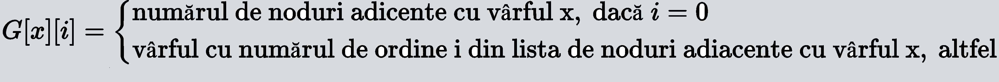
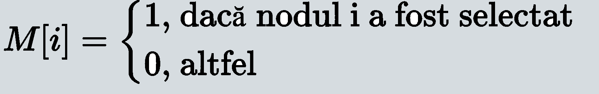
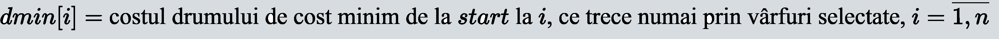
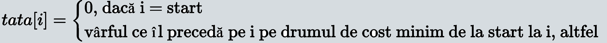

- vârfurile grafului sunt aeroporturile; acestea vor fi numerotate de la 1 la N(unde N reprezintă numărul de aeroporturi);
- există arc de la vârful x la vârful y, dacă de la aeroportul corespunzător vârfului x există un zbor (arc) având ca destinaţie aeroportul corespunzător vârfului y.
Graful orientat asociat problemei este ponderat, deoarece putem asocia o funcţie de cost, definită pe mulţimea arcelor cu valori în mulţimea numerelor reale strict pozitive, costul unui arc fiind egal cu costul zborului modelat de arcul respectiv. Aeroportul de start este un vârf special al grafului, denumit vârf de start.
În limbaj de grafuri, problema poate fi formulată astfel: Fie G=(X, V) un graf orientat, c: V→R+ o funcţie de cost, prin care se asociază fiecărui arc o valoare reală strict pozitivă şi x0 un vârf din graf. Să se determine câte un drum de cost minim de la x0 la fiecare dintre celelalte vârfuri ale grafului. Costul unui drum este egal cu suma costurilor arcelor din care este constituit drumul.


După parcurgerea lecţiei, elevul va fi capabil:
- să modeleze cu ajutorul teoriei grafurilor situaţia practică prezentată;
- să aleagă o reprezentare adecvată a grafului în memoria calculatorului;
- să descrie structurile de date necesare pentru implementarea algoritmului.
Schimbă harta - selectează graful dorit din lista de hărți
Graf Asociat - schimbă mediul de invățare din harta cu aeropoarte în graful asociat acesteia
Legendă - semnificațiile simbolurilor din pagină
Cum încep - folosește butoanele pentru controlul animației după ce ai selectat harta dorită
Definiții:
- Un graf neorientat este o pereche ordonată G = (X, V), unde X este o mulţime finită şi nevidă de elemente numite vârfuri(noduri), iar V este o mulţime de perechi de elemente ale lui X, numite muchii. O muchie având vârfurile i şi j (numite extremităţile sale) este notată [i,j].
- Un graf orientat este o pereche ordonată G = (X, V), deosebirea faţă de grafurile neorientate constând în faptul că elementele lui V sunt perechi ordonate de vârfuri numite arce. Orice arc (i,j) are stabilit un sens de parcurgere şi anume de la extremitatea sa iniţială i, la extremitatea sa finală j.
- Se numeşte drum o succesiune de arce de forma (i1,i2), (i2,i3), ..., (in-1,in), notată prescurtat sub forma (i1,i2,...,in). Lungimea drumului este egală cu numărul arcelor pe care le conţine. Dacă toate vârfurile drumului sunt distincte, atunci drumul se numeşte elementar.
Reprezentarea informaţiilor:
1. Vom reprezenta graful prin liste de adiacență, astfel:
2. Mulţimea vârfurilor selectate (pentru care a fost deja calculat drumul de cost minim) va fi reprezentată prin vectorul caracteristic M cu N componente:
3. Vom reţine pentru fiecare vârf i, costul drumului de cost minim de la start la i, drum care trece numai prin vârfuri selectate:
4. Pentru a reconstitui drumurile de cost minim de la vârful de start la fiecare dintre celelalte vârfuri, vom folosi un vector tata, cu N componente:
